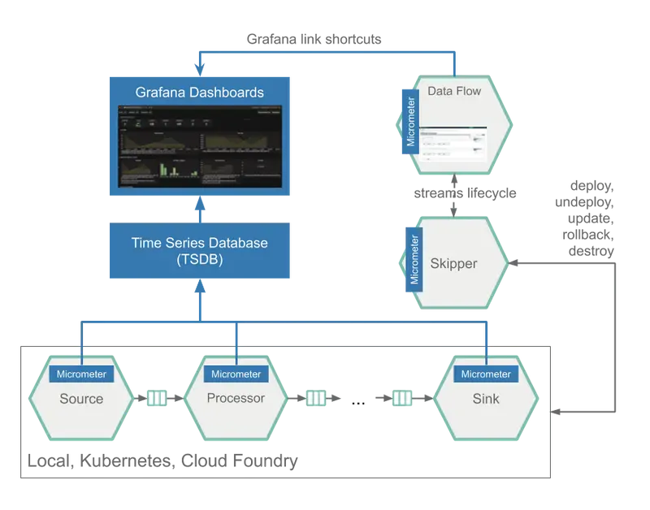
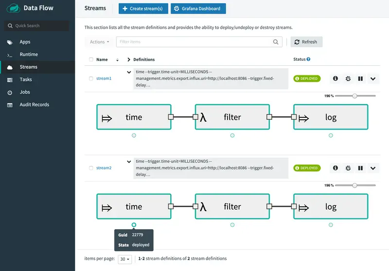
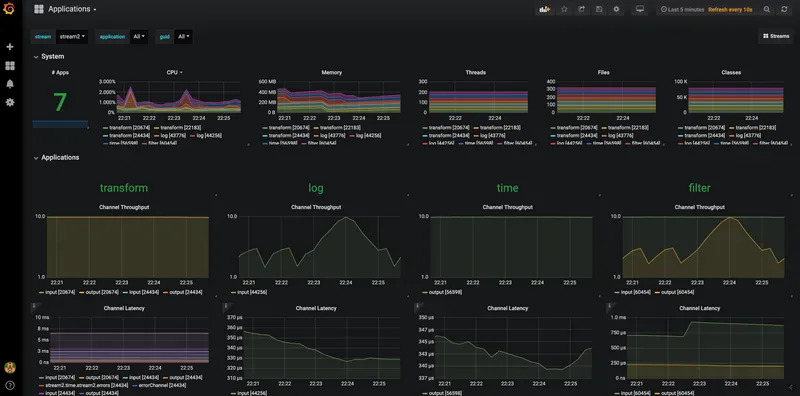

Data Flow metrics architecture는 vendor-neutral application metrics facade인 Micrometer library를 중심으로 설계되었습니다.
가장 널리 사용되는 모니터링 시스템의 instrumentation client를 통해 간단한 facade를 제공합니다.
micrometer instrumentation library는 Spring Boot에서 application metric의 전달을 강화하고 배포된 stream을 모니터링 하는데 중요한 message rate와 error에 대한 metric을 포함합니다.
사전 구축된 application은 가장 널리 사용되는 두가지 모니터링 시스템인 Prometheus 및 InfluxDB를 지원하도록 구성됩니다.
사용할 모니터링 시스템을 선언적으로 선택할 수 있습니다.
Data Flow는 stream 모니터링을 시작하는데 도움이 되도록 사용자 요구에 맞게 설치 및 customize할 수 있는 Grafana Dashboard를 제공합니다.
다음 그림은 application을 모니터링하는 일반적인 구조를 보여줍니다.

다음 이미지는 time | filter | log DSL 표현식으로 정의된 두 개의 스트림 생성을 보여줍니다.

다음 그림은 Grafana의 대시 보드를 보여줍니다.

Stream Monitoring Feature Guide에 모니터링 인프라를 설정하는 방법에 대한 자세한 정보가 포함되어 있습니다.